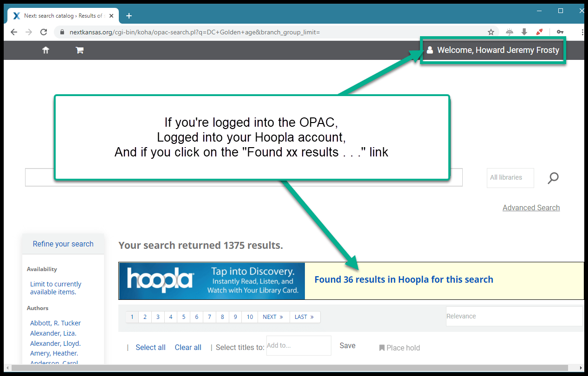
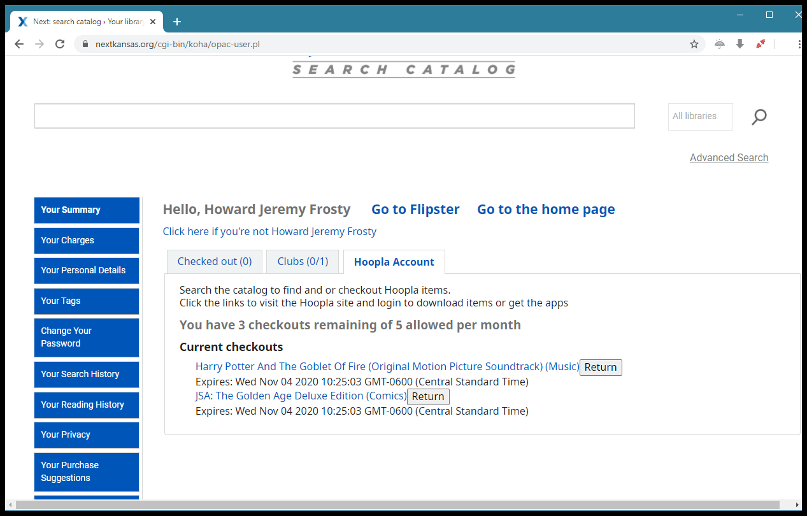
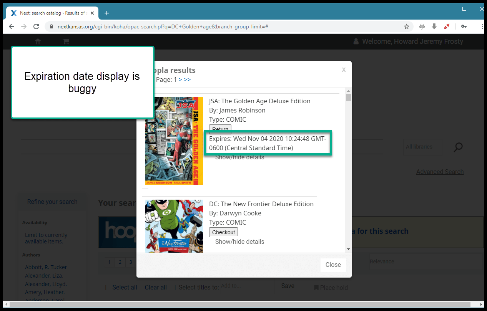

Hoopla searching on the OPAC¶
Beginning in November of 2020, we are no longer loading Marc records into the catalog. Instead we are using the new Hoopla “plugin” to allow patrons to simultaneously search our catalog and Hoopla in our OPAC.
Here’s how it works:
Go to the OPAC and do a search
A few seconds after the search has completed, a box will pop-up above the OPAC search results saying “Found XX results in Hoopla”
If you click on the link, a window will pop up showing you results for that search from Hoopla
Clicking on the cover image for one of these results will take you directly to Hoopla
If you are logged into your Next Search Catalog account and your Hoopla account with that card number, you will see additional options after the search is complete
A “Checkout” button will appear next to a title on the pop-up window
Patrons can also see what is currently checked out on their Hoopla account from the new “Hoopla Account” tab on their “Your summary” tab in their account
Currently there is a bug. The Hoopla pop out and Hoopla Account tab always shows “Expires:” as the current date and time

Questions and answers¶
Q: Does this mean the patron doesn’t need a Hoopla account any more?
A: No. It means that once a patron has a Hoopla account, when they log into the OPAC, Next Search Catalog is checking with Hoopla and if the patron has a Hoopla account, the catalog is connecting the patron’s existing Hoopla account to their OPAC account.
Q: When will the “Expires” bug be fixed?
A: We don’t know. People are working on it.